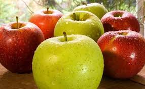
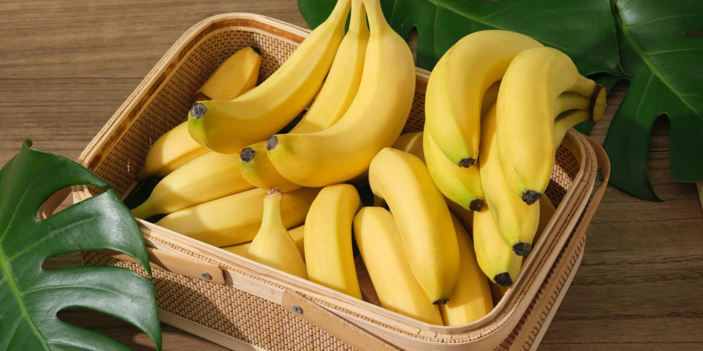

{{ bienvenidos }}
{{ email }}
Tienes 2500 puntos
Ofertas

Manzana
Deliciosas manzanas rojas, frescas y perfectas para un snack saludable.

Banana
Bananas maduras, ricas en potasio y perfectas para cualquier momento del día.
Naranja
Jugosas naranjas, ideales para obtener toda la vitamina C que necesitas.